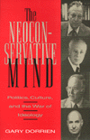

|
|
Affirmative
Action and the University
A Philosophical Inquiry
Cahn,
Steven M., ed.
Philosophical debates on equality in the university
320 pp • 6x9 • Spring 1993
cloth 1-56639-030-3
EAN 978-1-56639-030-9
|
| 
|
Afro-American
Jeremiad
Appeals for Justice in America
Howard-Pitney,
David
Analyzing the rhetorical style of black leaders
New in Paperback!
260 pp • 5.5x8.25• Spring 1990
paper 1-56639-086-9
EAN 978-1-56639-086-6
|
|
|
Aggression
Its Causes, Consequences, and Control
Berkowitz,
Leonard
A comprehensive examination of the nature of human aggression
496 pp • 6.4x9.3 • Spring 1993
cloth 1-56639-033-8
EAN 978-1-56639-033-0
|
| 
|
Art
and Engagement
Berleant,
Arnold
A new aesthetic theory based on aesthetic perception and participation
with the arts
New in Paperback!
288 pp • Spring 1991
paper 1-56639-084-2
EAN 978-1-56639-084-2
|
|
|
The
Asian American Movement
Wei,
William
The first history and analysis of the Asian American Movement
376 pp • 6x9 • Spring 1993
cloth 1-56639-049-4
EAN 978-1-56639-049-1
|
| 
|
Black
Baltimore
A New Theory of Community
McDougall,
Harold A.
Community self-help movements in Old West Baltimore provide an
example of participatory democracy for other neighborhoods
272 pp • 6x9 • Spring 1993
cloth 1-56639-037-0
EAN 978-1-56639-037-8
|
|
|
The
Case Against Christianity
Martin,
Michael
A rational critique of Christianity
New in Paperback!
288 pp • 5.5x8.25 • Spring 1991
paper 1-56639-081-8
EAN 978-1-56639-081-1
|
| 
|
A
Complex Sorrow
Reflections on Cancer and an Abbreviated Life
Paget,
Marianne A., and Marjorie L. DeVault
The last work of a scholar whose life mirrored her work
176 pp • 5.5x8.25 • Spring 1993
cloth 1-56639-041-9
EAN 978-1-56639-041-5
|
| 
|
Computers,
Minds, and Robots
Robinson,
William S.
A philosophical discussion of Artificial Intelligence
New in Paperback!
230 pp • 6x9 • Spring 1992
paper 1-56639-082-6
EAN 978-1-56639-082-8
|
|
|
Crime
and Capitalism
Readings in Marxist Crimonology
Greenberg,
David F., ed.
Classic and contemporary viewpoints on crime
776 pp • 6x9 • Spring 1993
paper 1-56639-026-5
EAN 978-1-56639-026-2
cloth 1-56639-025-7
EAN 978-1-56639-025-5
|
| 
|
Dangerous
Passage
The Social Control of Sexuality in Women's Adolescence
Nathanson,
Constance A.
Adolescent pregnancy as a public policy issue
New in Paperback!
304 pp • Spring 1991
paper 1-56639-077-X
EAN 978-1-56639-077-4
|
| 
|
Engineering
Culture
Control and Commitment in a High-Tech Corporation
Kunda,
Gideon
An analysis of corporate culture from the inside
New in Paperback!
288 pp • 6x9 • Fall 1991
paper 1-56639-075-3
EAN 978-1-56639-075-0
|
| 
|
Explorations
on the Edge of Time
The Prospects for World Order
Falk,
Richard
Envisioning the future through grassroots globalism
New in Paperback!
256 pp • Fall 1991
paper 1-56639-080-X
EAN 978-1-56639-080-4
|
|
|
Feminist
Legal Theory
Foundations
Weisberg,
D. Kelly, ed.
Comprehensive discussions of theoretical issues regarding law
and gender
640 pp • 7x10 • Spring 1993
paper 1-56639-029-X
EAN 978-1-56639-029-3
cloth 1-56639-028-1
EAN 978-1-56639-028-6
|
|
|
From
Plant to Politics
The Autoworkers Union in Postwar Canada
Yates,
Charlotte A.B.
A case study of the Canadian Autoworkers Union's role in shaping
the Canadian economy and responding to global restructuring
320 pp • 6x9 • Spring 1993
cloth 1-56639-043-5
EAN 978-1-56639-043-9
|
| 
|
Gratitude
McConnell,
Terrance
The first modern philosophical exploration of gratitude
288 pp • 5.5x8.25 • Spring 1993
cloth 1-56639-038-9
EAN 978-1-56639-038-5
|
|
|
Health
and Health Care In Developing Countries
Sociological Perspectives
Conrad,
Peter, and Eugene B. Gallagher, eds.
Sociological perspecitves are applied to medical issues
336 pp • 6x9 • Spring 1993
cloth 1-56639-027-3
EAN 978-1-56639-027-9
|
| 
|
Hume's
"Inexplicable Mystery"
His Views on Religion
Yandell,
Keith E.
A reexamination of Hume's views on religion
New in Paperback!
352 pp • Fall 1989
paper 1-56639-089-3
EAN 978-1-56639-089-7
|
| 
|
Italian
and Irish Filmmakers in America
Ford, Capra, Cuppola, and Scorsese
Lourdeaux,
Lee
Four major American Film directors are studied through the lens
of their ethnicity Four major American film directors are studied
through the lens of their ethnicity
New in Paperback!
288 pp • Spring 1990
paper 1-56639-087-7
EAN 978-1-56639-087-3
|
| 
|
Japenese
Cities in the World Economy
Fujita,
Kuniko, and Richard Child Hill, eds.
Japanese and Western scholars examine Japan's urban development
360 pp • 6x9 • Spring 1993
cloth 1-56639-034-6
EAN 978-1-56639-034-7
|
|
|
Jewish
Identity
Goldberg,
David Theo, and Michael Krausz, eds.
Philosophers explore the cutlrual identity of Judaism
344 pp • 6x9 • Spring 1993
paper 1-56639-040-0
EAN 978-1-56639-040-8
cloth 1-56639-039-7
EAN 978-1-56639-039-2
|
|
|
Latina
Politics, Latino Politics
Gender, Culture, and Political Participation in Boston
Hardy-Fanta,
Carol
Political organizing by men and women in Boston's Latino community
272 pp • 6x9 • Spring 1993
cloth 1-56639-031-1
EAN 978-1-56639-031-6
|
|
|
Leadership,
Conflict, and Cooperation in Afro-American Social Thought
Childs,
John Brown
A reexamination of black social thought in terms of leadership
style
New in Paperback!
224 pp • Fall 1988
paper 1-56639-085-0
EAN 978-1-56639-085-9
|
|
|
Maya
In Exile
Guatemalans in Florida
Burns,
Allan F., and Jerónimo Camposeco
The first report on the cultural adaptation of Guatemalan Maya
immigrants to Florida
256 pp • 5.5x8.25 • Spring 1993
paper 1-56639-036-2
EAN 978-1-56639-036-1
cloth 1-56639-035-4
EAN 978-1-56639-035-4
|
| 
|
The
Neoconservative Mind
Politics, Culture, and the War of Ideology
Dorrien,
Gary
The life and times of a powerful ideological force in America
512 pp • 6x9 • Spring 1993
cloth 1-56639-019-2
EAN 978-1-56639-019-4
|
| 
|
New
Immigrants, Old Unions
Organizing Undocumented Workers in Los Angeles
Delgado,
Héctor L.
A case study of a successful effort to unionize undocumented
immigrant workers
200 pp • 5.5x8.25 • Spring 1993
cloth 1-56639-044-3
EAN 978-1-56639-044-6
|
| 
|
The
New Phillies Encyclopedia
Westcott,
Rich, Frank Bilovsky, and Richie Ashburn
Virtually every significant detail of the team's lore and legend,
from 1883 to the present
808 pp • 9x12 • Spring 1993
cloth 1-56639-045-1
EAN 978-1-56639-045-3
|
| 
|
No
Longer Patient
Feminist Ethics and Health Care
Sherwin,
Susan
The first comprehensive handling of feminist bioethics
New in Paperback!
280 pp • Fall 1991
paper 1-56639-061-3
EAN 978-1-56639-061-3
|
|
|
Peace
Politics
The United States Between Old and New World Orders
Joseph,
Paul
Envisioning a New World Order that promotes environmental renewal,
stronger democracy, economic justice, and citizen activism
312 pp • 6x9 • Spring 1993
paper 1-56639-023-0
EAN 978-1-56639-023-1
cloth 1-56639-022-2
EAN 978-1-56639-022-4
|
| 
|
Philadelphia
Neighborhoods, Division, and Conflict in a Post-Industrial City
Adams,
Carolyn, David Bartelt, David Elesh, Ira Goldstein, Nancy Kleniewski,
and William Yancey
The city's history told on its own terms
New in Paperback!
224 pp • 6x9 • Fall 1991
paper 1-56639-078-8
EAN 978-1-56639-078-1
|
|
|
Philadelphia's
Black Elite
Activism, Accommodation, and the Struggle for Autonomy, 1787-1848
Winch,
Julie
A study of Philadelphia's black leaders before the Civil War
New in Paperback!
256 pp • Fall 1987
paper 1-56639-088-5
EAN 978-1-56639-088-0
|
| 
|
Poems
Performance Pieces Proses Plays Poetics
Schwitters,
Kurt, Jerome Rothenberg, and Pierre Joris
The first book of Kurt Schwitters' writings translated into English
288 pp • 7x10 • Spring 1993
cloth 0-87722-894-9
EAN 978-0-87722-894-3
|
|
|
The
Politics of Street Crime
Criminal Process and Cultural Obsession
Scheingold,
Stuart A.
America's contradictory attitudes toward crime: repellent danger
versus media glamorization
New in Paperback!
250 pp • Spring 1991
paper 1-56639-024-9
EAN 978-1-56639-024-8
|
|
|
Postmodernism
and Democratic Theory
Botwinick,
Aryeh
A discussion of the political and economic dimensions of postmodernism
288 pp • 6x9 • Spring 1993
cloth 0-87722-997-X
EAN 978-0-87722-997-1
|
|
|
The
Psychodynamics of Organizations
Hirschhorn,
Larry, and Carole K. Barnett, eds.
An exploration of psychological issues that arise in modern corporations
288 pp • 6x9 • Spring 1993
paper 1-56639-021-4
EAN 978-1-56639-021-7
cloth 1-56639-020-6
EAN 978-1-56639-020-0
|
|
|
Psychology
of Judgment and Decision Making
Plous,
Scott
Psychological research on how people make decisions
Spring 1993
cloth 0-87722-913-9
EAN 978-0-87722-913-1
|
| 
|
Radical
Philosophy
Tradition, Counter-Tradition, Politics
Gottlieb,
Roger S.
Well-known radical philosophers challenge and reflect on political
practice and cultural domination
304 pp • 6x9 • Spring 1993
cloth 1-56639-046-X
EAN 978-1-56639-046-0
|
|
|
Rethinking
Sex
Social Theory and Sexuality Research
Connell,
R. W., and G. W. Dowsett, eds.
Essays examine the social dimensions of sexuality
192 pp • 5.5x8.25 • Spring 1993
paper 1-56639-073-7
EAN 978-1-56639-073-6
cloth 1-56639-072-9
EAN 978-1-56639-072-9
|
|
|
Science
that Colonizes
A Critique of Fertility Studies in Africa
Riedmann,
Agnes
A study charges Western researchers with First World cultural
imperialism
192 pp • 6x9 • Spring 1993
cloth 1-56639-042-7
EAN 978-1-56639-042-2
|
|
|
Shelter
Poverty
New Ideas on Housing Affordability
Stone,
Michael E.
A progressive plan to solve the problem of housing affordability
384 pp • 6x9 • Spring 1993
paper 1-56639-092-3
EAN 978-1-56639-092-7
cloth 1-56639-050-8
EAN 978-1-56639-050-7
|
| 
|
Social
Inequality in Oaxaca
A History of Resistance and Change
Murphy,
Arthur D., Alex Stepick, and Henry A. Selby
Two millennia of social inequality
New in Paperback!
300 pp • Fall 1991
paper 0-87722-869-8
EAN 978-0-87722-869-1
|
| 
|
Time
and Experience
McInerney,
Peter K.
An analysis of the philosophy of time
New in Paperback!
224 pp • Spring 1991
paper 1-56639-010-9
EAN 978-1-56639-010-1
|
| 
|
The
Transformation of American Catholic Sisters
Quiñonez,
Lora Ann, and Mary Daniel Turner
A report on the social, political, and spiritual changes for
Catholic nuns in the U.S. since Vatican II
New in Paperback!
224 pp • Fall 1991
paper 1-56639-074-5
EAN 978-1-56639-074-3
|
| 
|
The
Underclass Question
Lawson,
Bill E., and William Julius Wilson, eds.
African American philosophers discuss "underclass"
New in Paperback!
232 pp • 6x9 • Spring 1992
paper 1-56639-062-1
EAN 978-1-56639-062-0
|
|
|
The
Unfulfilled Promise
Public Subsidy of the Arts in America
Arian,
Edward
Public funding for the arts is examined in terms of participatory
democratic theory
New in Paperback!
120 pp • Spring 1989
paper 1-56639-083-4
EAN 978-1-56639-083-5
|
| 
|
Upstream/Downstream
Issues in Environmental Ethics
Scherer,
Donald, ed.
Philosophy applied to environmental issues
New in Paperback!
288 pp • Fall 1990
paper 1-56639-079-6
EAN 978-1-56639-079-8
|
| 
|
Young
Unwed Fathers
Changing Roles and Emerging Policies
Lerman,
Robert I., and Theodara J. Ooms, eds.
Essays on policies, programs, and ethical issues
360 pp • 6x9 • Spring 1993
cloth 1-56639-048-6
EAN 978-1-56639-048-4
|